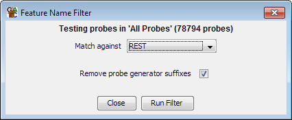

The feature name filter allows you to select a set of probes based on a match between their names and the names of a set of features in an annotation track.

This type of filter is useful where you have imported an annotation track containing a subset of features and you want to select the same subset in the current project. For example you might have a list of transcripts whose promoters are enriched in a certain histone modification, and you want to see what these same transcripts do in an RNA-Seq dataset. The positions of the probes from the histone modification dataset will not match the transcript positions in the RNA-Seq dataset (one is promoters the other is transcripts), but the names will be the same between the two, so this filter can be used.